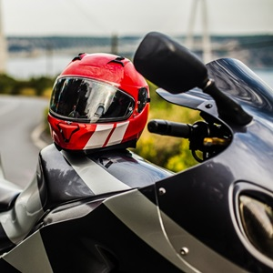
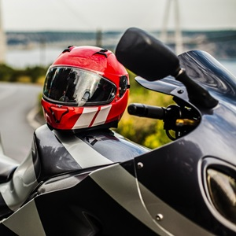

Cafe Racer
Terbaik
Terbaik

Custom Made

Perlengkapan Sepeda Motor
Klasik
Klasik

Custom
Modifikasi
Modifikasi

Perhiasan Keren
Untuk Pemotor
Untuk Pemotor
TERBARU!
Selamat datang di CLASSIC MOTORCYCLE, di mana gairah bertemu dengan keanggunan yang tak lekang oleh waktu dua roda. Platform kami adalah perayaan dari daya tarik yang tak lekang oleh waktu sepeda motor vintage, menangkap esensi dari sebuah era ketika keahlian dan gaya adalah yang terpenting. Benamkan diri Anda dalam dunia wahana ikonik, di mana setiap mesin menceritakan sebuah kisah, dan setiap desain mencerminkan kesenian dari masa lampau. Apakah Anda seorang penggemar berpengalaman atau pendatang baru dunia sepeda motor klasik, bergabunglah bersama kami dalam menghidupkan kembali semangat terbuka dan menikmati pesona tak tertandingi dari mesin-mesin legendaris ini.
Dari kisah restorasi hingga perjalanan mendebarkan melalui lanskap yang indah, video kami yang dikurasi dengan cermat menjanjikan perjalanan yang mendalam bagi para penggemar yang berpikiran sama, memberikan pengalaman yang otentik dan pengalaman yang menakjubkan secara visual.
Setiap artikel blog menyoroti sepeda motor klasik tertentu, dan dampak yang ditinggalkannya pada dunia sepeda motor. Apakah Anda seorang penggemar berat atau pendatang baru di dunia ini, seri ini adalah untuk Anda belakang panggung untuk cerita di balik tunggangan paling ikonik dalam sejarah.
Mengungkap perjalanan rumit dalam merestorasi sepeda motor antik saat kami berbagi kiat-kiat ahli, kisah sukses yang menginspirasi, dan tantangan yang dihadapi oleh para penggemar yang bersemangat dalam menghidupkan kembali kendaraan roda dua yang tak lekang oleh waktu ini.

Bebaskan ikon gaya dalam diri Anda dengan blog Style Revival kami, yang didedikasikan untuk para penggemar sepeda motor klasik yang bergaya. Temukan tren terbaru dalam perlengkapan berkendara, jelajahi evolusi fashion biker, dan dapatkan tips tentang cara menggabungkan gaya abadi dengan fungsionalitas modern.


 
